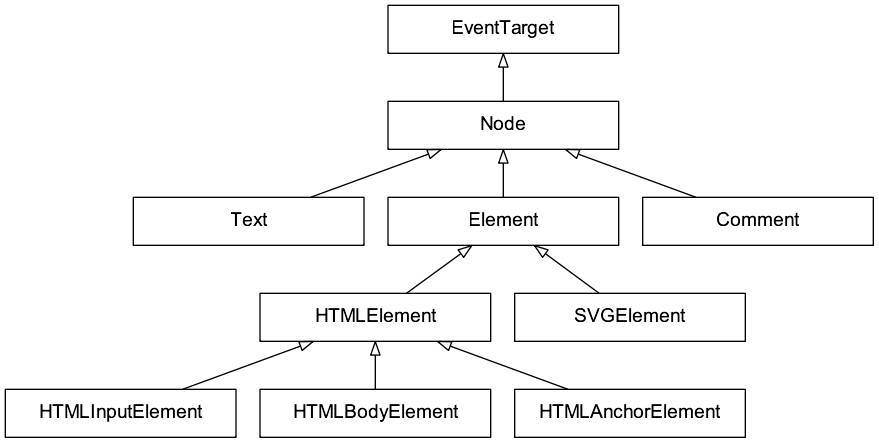

JavaScript 编程语言精粹
Table of Contents
1 基础知识
1.1 常量和变量
定义常量使用 const 关键字，变量有 var 和 let ，其中 var 是旧版本的定
义变量方法，它没有 scope，但是 let 是有 scope 的，所以无论如何 定义变量请
使用 let 关键字
> if (true) { ... var v1 = true; ... } > v1 true > if (true) { ... let v2 = true; ... } > v2 Thrown: ReferenceError: v2 is not defined >
1.2 null 和 undefined
null 在 JavaScript 中表示空值， undefined 通常是为没有赋值的变量。通常变
量为空的时候要使用 null ，尽量避免 undefined
> null == undefined true > null === undefined false > undefined == undefined true > typeof undefined 'undefined' > typeof null 'object' > typeof true 'boolean' > typeof 0 'number' >
1.3 类型
1.3.1 基本类型
JavaScript 的基本类型包括： string, number, boolean, symbol, null
和 undefined
- 普通对象都有相应的方法
null和undefined没有方法
JavaScript 的基本类型有以下 包装类 ，例如： String, Number, Boolean
和 Symbol
1.3.2 类型转换
转换成字符串
> String(true) 'true' > String(null) 'null' > String(23) '23' >String(undefined) 'undefined' > '' + 21 '21' > 2 + 2 + '1' '41'
转换成数值
> "6" / "3" 2 > Number("234") 234 > Number("str") NaN > Number(null) 0 > Number(undefined) NaN > Number(true) 1 > Number(false) 0 > +'12.3' 12.3 > parseInt('23') 23 > parseFloat('3.14') 3.14
2 控制流
2.1 if 条件, switch case 多层条件控制
if (year < 2015) { console.log( 'Too early...' ); } else if (year > 2015) { console.log( 'Too late' ); } else { console.log( 'Exactly!' ); } let a = 2 + 2; switch (a) { case 3: console.log( 'Too small' ); break; case 4: console.log( 'Exactly!' ); break; case 5: console.log( 'Too large' ); break; default: console.log( "I don't know such values" ); }
2.2 while for 循环
let i = 0; while (i < 3) { // shows 0, then 1, then 2 console.log( i ); i++; } do { console.log( i ); i++; } while (i < 3); for (let i = 0; i < 3; i++) { // shows 0, then 1, then 2 console.log(i); }
2.3 try catch 处理异常
异常一般用到的比较少，这里先记上
try { console.log( 'try' ); if (confirm('Make an error?')) BAD_CODE(); } catch (e) { console.log( 'catch' ); } finally { console.log( 'finally' ); }
3 函数
3.1 函数定义
函数是 JavaScript 的重要工具，定义函数有以下几种方法
function sum(a, b) { let result = a + b; return result; } let sum = function(a, b) { let result = a + b; return result; } // expression at the right side let sum = (a, b) => a + b; // or multi-line syntax with { ... }, need return here: let sum = (a, b) => { // ... return a + b; } // without arguments let sayHi = () => console.log("Hello"); // with a single argument let double = n => n * 2;
箭头函数绑定了上下文，所以箭头函数有以下特点：
- 没有
this - 没有
arguments - 不能使用
new来创建对象 - 没有
super
3.2 带默认值的函数
function showMessage(from, text) { console.log(from + ': ' + text); } function showMessage2(from, text='hello') { console.log(from + ': ' + text); }
3.3 Rest 参数和 ... 操作符
3.3.1 Rest 参数
JavaScript 中的三点操作符 ... 可以定义变长的参数
function sumAll(...args) { // args is the name for the array let sum = 0; for (let arg of args) sum += arg; return sum; } sumAll(1); // 1 sumAll(1, 2); // 3 sumAll(1, 2, 3); // 6
3.3.2 arguments 变量
JavaScript 的每个函数中都默认传入一个 Array-like 的 arguments 变量，用于处
理函数的对象。使用 arguments 主要是兼容以前 JavaScript 不支持 Rest 参数
function showName() { console.log(arguments.length); console.log(arguments[0]); console.log(arguments[1]); // it's iterable // for(let arg of arguments) console.log(arg); } // shows: 2, Julius, Caesar showName("Julius", "Caesar"); // shows: 1, Ilya, undefined (no second argument) showName("Ilya");
3.3.3 ... 操作符
... 可以将数组中作为变长参数传入函数中
> arr = [1, 2, 5]
[ 1, 2, 5 ]
> Math.max(1,2,5)
5
> Math.max(arr)
NaN
> Math.max(...arr)
5
... 可以合并数组
> let a = [1, 3, 5]; > let b = [2, 4, 6]; > [...a, ...b] [ 1, 3, 5, 2, 4, 6 ] > Math.max(9, ...a, ...b) 9 >
3.4 函数对象和 NFE
JavaScript 中函数也是一种对象，所以函数都是 Function 的实例。NFE 是命名函数
表达式（Named Function Expression）。
3.4.1 函数对象
- 函数对象都包含
name属性，表示函数的名称 - 函数对象包含
length属性，表示函数的参数的长度
> function sayHi() { console.log('hello'); } > sayHi.name 'sayHi' > sayHi.length 0 >
3.4.2 NFE
NFE 在函数定义赋值前重新添加一个函数名称，具体如下：
let sayHi = function func(who) { // additional func as name console.log(`Hello, ${who}`); };
这样定义的好处是：
- func 函数名对函数内部可见
- func 函数名对函数外部不可见
let sayHi = function func(who) { if (who) { console.log(`Hello, ${who}`); } else { func("Guest"); // use func to re-call itself } }; sayHi(); // Hello, Guest // But this won't work: func(); // Error, func is not defined (not visible outside of the function)
3.5 调度 setTimeout/setInterval
setTimeout设置一定计时后运行setInterval设置一定周期运行函数clearTimeout/clearInterval取消计时器
3.5.1 setTimeout
let timerId = setTimeout(func|code, delay[, arg1, arg2...])
func回调函数delay延迟毫秒数arg1, arg2, ...回调函数的参数
function sayHi() { console.log('Hello'); } setTimeout(sayHi, 1000);
setTimeout(func,0) 是在定义后里面运行函数，这个可以实现异步调用，例如下面
的例子中会在显示 Hello 过后立马显示 World
setTimeout(() => console.log("World"), 0); console.log("Hello");
另外使用 setTimeout(func,0) 可以将高消耗 CPU 的工作放在初始化过后进行
3.5.2 clearTimeout
let timerId = setTimeout(...); clearTimeout(timerId);
3.5.3 setInterval
let timerId = setInterval(func|code, delay[, arg1, arg2...])
参数和 setTimeout 类似
// repeat with the interval of 2 seconds let timerId = setInterval(() => console.log('tick'), 2000); // after 5 seconds stop setTimeout(() => { clearInterval(timerId); console.log('stop'); }, 5000);
3.6 函数 this 绑定
3.7 Currying
Currying 将 f(a,b,c) 转化成 f(a)(b)(c) 这样的调用。一个简单的 curry 实现如
下：
function curry(func) { return function curried(...args) { if (args.length >= func.length) { return func.apply(this, args); } else { return function(...args2) { return curried.apply(this, args.concat(args2)); } } }; }
lodash 库提供 _.curry 实现的工具函数
var abc = function(a, b, c) { return [a, b, c]; }; var curried = _.curry(abc); curried(1)(2)(3); // => [1, 2, 3] curried(1, 2)(3); // => [1, 2, 3] curried(1, 2, 3); // => [1, 2, 3] // Curried with placeholders. curried(1)(_, 3)(2); // => [1, 2, 3]
4 标准内置对象
4.1 Number 数字
4.1.1 转化成数字
parseInt(str, base)转化成整数parseFloat(str)转化成浮点数
4.1.2 数字截断
主要有： Math.floor , Math.ceil, Math.round, Math.trunc 这些方法，例
子见下表
| Math.floor | Math.ceil | Math.round | Math.trunc | |
|---|---|---|---|---|
| 3.1 | 3 | 4 | 3 | 3 |
| 3.6 | 3 | 4 | 4 | 3 |
| -1.1 | -2 | -1 | -1 | -1 |
| -1.6 | -2 | -1 | -2 | -1 |
4.1.3 其它函数
Math.random()取 0 到 1 之间的随机数Math.max(a, b, c, ..)和Math.min(a, b, c, ..)取最值Math.pow(n, power)
4.1.4 特殊数字测试
isFinite如果不是无穷大，返回真；否则返回假。Infinity和-Infinity表示无穷大和无穷小isNaN测试是否是一个数字
> isFinite(NaN) false > isFinite(-Infinity) false > isFinite(Infinity) false > isFinite(12) true > isNaN(NaN) true > isNaN(2) false > isNaN("ss") true >
4.2 String 字符串
String 对象在 MDN 中有详细的介绍
4.2.1 定义字符串
注意使用 ${...} 表达式
> "Double quote" 'Double quote' > 'Single quote' 'Single quote' > let name = 'Jack' > `Hi, ${name}` 'Hi, Jack' > `1 + 2 = ${1 + 2}` '1 + 2 = 3'
4.2.2 字符串长度
str.length ，字符串长度是一个对象中的属性
> 'hello'.length
5
4.2.3 获取子字符串
[]和str.charAt(idx): 通过下标索引获取字符str.slice(beginIndex[,endIndex])获取子字符串，如果 beginIndex 或 endIndex 是负表示反向索引str.substring(indexStart[,indexEnd])和 slice 和类似，但是 substring 支 持 indexEnd 小于 indexStart
> 'abcd'.substring(1,3) 'bc' > 'abcd'.substring(3,1) 'bc' > 'abcd'.slice(1,3) 'bc' > 'abcd'.slice(3,1) '' >
4.2.4 字符串查找
str.indexOf(searchValue,fromIndex): 查找字符串中是否包含 searchValue， 并返回下标str.lastIndexOf(searchValue,fromIndex): 反向查找字符串中是否包含 searchValue，并返回下标str.includes(searchString,[position]): 查找字符串，返回布尔值str.startsWith(searchString[,position])和str.endsWith(searchString[,length])
> 'abaa'.indexOf('a') 0 > 'abaa'.indexOf('b') 1 > 'abaa'.lastIndexOf('a') 3 > 'abaa'.includes('b') true > 'hello'.startsWith('h') true > 'hello'.startsWith('a') false > 'hello'.endsWith('a') false >
4.2.5 字符串替换/正则表达式
str.replace(regexp|substr,newSubstr|function)str.match(regexp): 匹配 regexp 返回数组，如果 regexp 是 null 则返回空str.search(regexp)
> 'abaa'.replace('a', '$') '$baa' > 'abaa'.replace(/a/g, '$') '$b$$' >
> 'abaa'.match(/a/g) [ 'a', 'a', 'a' ] > 'abaa'.match(/a/) [ 'a', index: 0, input: 'abaa', groups: undefined ] > 'abaa'.match(/^a/) [ 'a', index: 0, input: 'abaa', groups: undefined ] > 'For more information, see Chapter 3.4.5.1'.match(/see (chapter \d+(\.\d)*)/i) [ 'see Chapter 3.4.5.1', 'Chapter 3.4.5.1', '.1', index: 22, input: 'For more information, see Chapter 3.4.5.1', groups: undefined ] > 'abaa'.match(null) null
4.2.6 其它字符串函数
str.padStart(),str.padEnd()str.repeat()str.trim(),str.trimStart(),str.trimEnd()str.toUpperCase(),str.toLowerCase()str.split()
> 'abaa'.split() [ 'abaa' ] > 'abaa'.split('') [ 'a', 'b', 'a', 'a' ]
4.3 Array 数组
数组是具有固定长度 (arr.length) 的同一类元素的集合，具体参考 MDN 中的定义。
4.3.1 创建
> let fruits = ['Apple', 'Banana', 'Orange'] undefined > fruits.length 3
4.3.2 修改元素：添加/删除
push(...items): 添加元素到数组结尾pop(): 移除结尾的元素shift(): 删除起始的元素unshift(...items): 添加元素到数组起始
> fruits [ 'Apple', 'Banana', 'Orange' ] > fruits.push('Grape') 4 > fruits [ 'Apple', 'Banana', 'Orange', 'Grape' ] > fruits.pop() 'Grape' > fruits [ 'Apple', 'Banana', 'Orange' ] > fruits.shift() 'Apple' > fruits [ 'Banana', 'Orange' ] > fruits.unshift('Apple') 3 > fruits [ 'Apple', 'Banana', 'Orange' ] >
splice(pos, deleteCount, ...items): 在pos位置删除deleteCount个元 素然后插入itemsslice(start, end): 创建一个新的数组, 复制start到end(不包含) 到新 的数组中concat(...items): 返回一个新的数组: 拷贝当前数组的所有元素然后添加items到新的数组中. 如果任何items是一个数组, 数组里面的元素都会添加的 新的数组中
> fruits [ 'Apple', 'Banana', 'Orange' ] > let new_fruits = fruits.slice(0, 2) > new_fruits [ 'Apple', 'Banana' ] > fruits.splice(1, 1) [ 'Banana' ] > fruits [ 'Apple', 'Orange' ] > fruits [ 'Apple', 'Orange' ] > fruits.splice(1, 0, 'Pear') [] > fruits [ 'Apple', 'Pear', 'Orange' ] > fruits.concat('Banana') [ 'Apple', 'Pear', 'Orange', 'Banana' ] > fruits [ 'Apple', 'Pear', 'Orange' ] >
4.3.3 查找
indexOf/lastIndexOf(item, pos): 查找item, 起始位置是~pos~ , 如果没有 找到则返回-1includes(value): 返回true如果数组包含value, 否则falsefind/filter(func): 使用谓词函数过滤数组, 返回第一个/所有的使得谓词函数成 立的元素findIndex(func): 和find相似, 但是返回下标索引而不是数组元素
> fruits [ 'Apple', 'Pear', 'Orange' ] > fruits.indexOf('Pear') 1 > fruits.indexOf('Banana') -1 > fruits.find(function (e) { return e.length >= 5;}) 'Apple' > fruits.filter(function (e) { return e.length >= 5;}) [ 'Apple', 'Orange' ] > fruits.includes('Banana') false > fruits.includes('Pear') true > 'Banana' in fruits false > 'Pear' in fruits false
4.3.4 迭代
forEach(func): 调用func处理所有的数组里的元素, 但是不返回
['Apple', 'Banana', 'Orange'].forEach(function(e, i, arr) { console.log(i + " : " + e) })
4.3.5 数组变换
map(func): 调用func处理所有数组里的元素，返回处理结果集构成的新数组sort(func): 使用func排序数组，然后返回reverse(): 返回逆序的数组split/join: 在字符串和数组之间转换reduce(func, initial): 计算得出一个值， 通过调用func函数处理起始值和 中间值
> fruits [ 'Apple', 'Pear', 'Orange' ] > fruits.map(function(e) { return e.toUpperCase();}) [ 'APPLE', 'PEAR', 'ORANGE' ] > fruits.reduce(function(a, e) { return a+':'+e;}, '') ':Apple:Pear:Orange' > fruits.join(':') 'Apple:Pear:Orange' > 'Apple:Pear:Orange'.split(':') [ 'Apple', 'Pear', 'Orange' ] > fruits.sort() [ 'Apple', 'Orange', 'Pear' ] > fruits [ 'Apple', 'Orange', 'Pear' ] > fruits.sort(function(a,b) {return a.length>b.length?1:-1;}) [ 'Pear', 'Apple', 'Orange' ] > fruits.reverse() [ 'Orange', 'Apple', 'Pear' ] >
4.3.6 其它
Array.isArray(arr): 检查arr是否是数组对象arr.some(fn)/arr.every(fn): 调用fn作用于数组所有元素，如果任何/ 所有的都返回true, 则返回true, 否则返回falsearr.fill(value, start, end): 使用value填充数组start到end位置 的元素arr.copyWithin(target, start, end): 复制数组start到end位置中的元 素到自身target位置中, 注意会覆盖已存在的元素
4.4 迭代器/数组类似物
4.4.1 Iterable 和 Array-like
Iterable是实现了Symbol.iterator方法的对象Symbol.iterator必须包含next()方法next()方法必须返回像{done: Boolean, value: any}这样的对象，done 为true表示迭代器结束Iterable主要是使用for..of迭代器进行迭代
Array-like是含义length属性和可索引的对象
let arrayLike = { // has indexes and length => array-like 0: "Hello", 1: "World", length: 2 }; let iterable = { from: 1, to: 5, // 1. call to for..of initially calls this [Symbol.iterator]() { this.current = this.from; // 2. ...it returns the iterator: return this; }, // 3. next() is called on each iteration by the for..of loop next() { // 4. it should return the value as an object {done:.., value :...} if (this.current <= this.to) { return { done: false, value: this.current++ }; } else { return { done: true }; } } } } for (let num of iterable) { console.log(num); } // => prints 1, 2, 3, 4, 5
4.4.2 Array.from
Array.from(arrayLike[,mapFn[,thisArg]]) 通过 Array-like 的对象来新建一个真
的 Array，例如字符串 'foo' 是 Array-like 对象，因此可以建立一个新的数组
> Array.from('foo'); [ 'f', 'o', 'o' ]
4.5 Map/Set 等标准内置对象
Map , WeakMap, Set, WeakSet 等都是常用的 Javascript 对象，具体参考 MDN 中的定 义 Standard built-in objects
Map 对象操作
let map = new Map(); map.set('1', 'str1'); // a string key map.set(1, 'num1'); // a numeric key map.set(true, 'bool1'); // a boolean key // remember the regular Object? it would convert keys to string // Map keeps the type, so these two are different: console.log( map.get(1) ); // 'num1' console.log( map.get('1') ); // 'str1' console.log( map.size ); // 3 let recipeMap = new Map([ ['cucumber', 500], ['tomatoes', 350], ['onion', 50] ]); // iterate over keys (vegetables) for (let vegetable of recipeMap.keys()) { console.log(vegetable); // cucumber, tomatoes, onion } // iterate over values (amounts) for (let amount of recipeMap.values()) { console.log(amount); // 500, 350, 50 } // iterate over [key, value] entries for (let entry of recipeMap) { // the same as of recipeMap.entries() console.log(entry); // cucumber,500 (and so on) }
Set 集合函数
let set = new Set(); let john = { name: "John" }; let pete = { name: "Pete" }; let mary = { name: "Mary" }; // visits, some users come multiple times set.add(john); set.add(pete); set.add(mary); set.add(john); set.add(mary); // set keeps only unique values console.log( set.size ); // 3 for (let user of set) { console.log(user.name); // John (then Pete and Mary) } let set = new Set(["oranges", "apples", "bananas"]); for (let value of set) console.log(value); // the same with forEach: set.forEach((value, valueAgain, set) => { console.log(value); });
4.6 Object 对象
Object 是 JavaScript 中的对象
4.6.1 定义对象
> let user1 = new Object() > user1 {} > let user2 = {} > user2 {} > let user3 = {name: 'Tom', age: 22} > user3 { name: 'Tom', age: 22 } > user3.name 'Tom' > user3['name'] 'Tom' >
4.6.2 对象基本操作
- 引用对象中的值
- 点方式：
obj.key - 方括号方式：
obj['key']
- 点方式：
- 删除对象中的值
delete obj.key - 判断对象中是否存在键
'key' in obj
let usr = {name: 'Tom', age: 22} > 'name' in usr true > 'birthday' in usr false >
4.6.3 对象引用/复制
= 赋值是引用
> obj1 = {a:'Apple', b:1}
{ a: 'Apple', b: 1 }
> obj2 = obj1
{ a: 'Apple', b: 1 }
> obj2.b = 7
7
> obj1
{ a: 'Apple', b: 7 }
>
Object.assign(...) 可以实现复制传值，或者使用 lodash 库中的
_.cloneDeep(obj)
> obj3 = Object.assign({}, obj1)
{ a: 'Apple', b: 7 }
> obj3.b = 9
9
> obj1
{ a: 'Apple', b: 7 }
>
下面是更多的传值的示例
> usr
{ name: 'Tom', age: 22, foo: undefined }
> usr1 = usr
{ name: 'Tom', age: 22, foo: undefined }
> usr1 == usr
true
> usr1 === usr
true
> let _usr = {}
> for (k in usr) { _usr[k] = usr[k]; }
> _usr
{ name: 'Tom', age: 22, foo: undefined }
> _usr == usr
false
> _usr === usr
false
> usr
{ name: 'Jackson', age: 22, foo: undefined }
> delete usr.foo
true
> usr
{ name: 'Jackson', age: 22 }
> 'foo' in usr
false
>
4.6.4 更新对象
Object.assign(dest[, src1, src2, src3...]) 可以批量更新对象中的数值。
> usr
{ name: 'Tom', age: 22, foo: undefined }
> Object.assign(usr, {name: 'Jackson'})
{ name: 'Jackson', age: 22, foo: undefined }
>
4.6.5 对象的键和值
Object.keys(obj)返回 obj 的键Object.values(obj)返回 obj 的值Object.entries(obj)返回 obj 的 [key, value] 对
> let o1 = {apple:1, banana:2, orange:3} > o1 { apple: 1, banana: 2, orange: 3 } > Object.keys(o1) [ 'apple', 'banana', 'orange' ] > o1.keys() TypeError: o1.keys is not a function > Object.values(o1) [ 1, 2, 3 ] > Object.entries(o1) [ [ 'apple', 1 ], [ 'banana', 2 ], [ 'orange', 3 ] ] >
4.7 Date 时间和日期
4.7.1 创建日期对象
new Date(), new Date(milliseconds) 和 new Date(date_str) 可以创建日期
对象
> new Date() 2019-07-30T06:58:04.792Z > new Date(123124123) 1970-01-02T10:12:04.123Z > new Date("2017-01-26") 2017-01-26T00:00:00.000Z
4.7.2 时间函数
具体见下面的样例
> let now = new Date() > now.getFullYear() 2019 > now.getYear() 119 > now.getMonth() 6 > now.getDate() 30 > now.getHours() 15 > now.getMinutes() 5 > now.getSeconds() 21 > now.getMilliseconds() 725 > now.getDay() 2 >
4.7.3 时间戳
时间戳有以下函数
// get timestamp > now 2019-07-30T07:05:21.725Z > now.getTime() 1564470321725 > +now 1564470321725 > Date.now() 1564470538021 // time diff > new Date() - now 260547
4.7.4 字符串和 Date 互转
Date.parse(str), str 应满足 YYYY-MM-DDTHH:mm:ss.sssZ 格式
> Date.parse('2012-01-26T13:51:50.417-07:00');
1327611110417
Date 转字符串有以下方法
> now.toJSON() '2019-07-30T07:05:21.725Z' > now.toDateString() 'Tue Jul 30 2019' > now.toISOString() '2019-07-30T07:05:21.725Z' > now.toString() 'Tue Jul 30 2019 15:05:21 GMT+0800 (GMT+08:00)' > now.toTimeString() '15:05:21 GMT+0800 (GMT+08:00)' > now.toUTCString() 'Tue, 30 Jul 2019 07:05:21 GMT' >
4.8 JSON
JSON.stringify(obj)将数组或对象转成 JSON 字符串JSON.parse(str)解析 JSON 字符串
> let student = { ... name: 'John', ... age: 30, ... isAdmin: false, ... courses: ['html', 'css', 'js'], ... wife: null ... }; undefined > JSON.stringify(student) '{"name":"John","age":30,"isAdmin":false,"courses":["html","css","js"],"wife":null}' > JSON.stringify([1,2,3]) '[1,2,3]' > JSON.parse('[1,2,3,2,3]') [ 1, 2, 3, 2, 3 ] >
5 面向对象知识
5.1 new 关键字和构造器
5.1.1 构造器
JavaScript 中没有所谓的构造器，它的构造器实际上是一个函数，该函数满足以下两 点：
- 函数名称使用 Pascal case 命名
- 函数只能使用
new操作符来执行
例如：
function User(name) { this.name = name; this.isAdmin = false; } let user = new User("Jack"); console.log(user.name); // Jack console.log(user.isAdmin); // false
5.1.2 new 操作符
new 操作符做了以下的事情:
- 新建了函数作用域的
this对象 - 并且将新创建的
this对象返回
该过程大致如下面代码所示：
function User(name) { // this = {}; (implicitly) // add properties to this this.name = name; this.isAdmin = false; // return this; (implicitly) }
5.2 属性的 flag 和描述符
Object.getOwnPropertyDescriptor(obj,propertyName) 方法可以获取对象属性的描
述符
> let user = { name: 'Jinghui', age: 18} > user { name: 'Jinghui', age: 18 } > Object.getOwnPropertyDescriptor(user, 'name') { value: 'Jinghui', writable: true, enumerable: true, configurable: true } >
writable如果为真，则为可写属性enumerable如果为真，则在循环中可以被迭代到configurable如果为真，则可以使用delete删除
Object.defineProperty(obj,propertyName,descriptor) 方法可以修改对象属性描述
符的属性值
> user.name = 'XiaoHu' 'XiaoHu' > user { name: 'XiaoHu', age: 18 } > Object.defineProperty(user, 'name', {writable:false}) { name: 'XiaoHu', age: 18 } > Object.getOwnPropertyDescriptor(user, 'name') { value: 'XiaoHu', writable: false, enumerable: true, configurable: true } > user.name = 'Jinghu Hu' 'Jinghu Hu' > user { name: 'XiaoHu', age: 18 } >
Object.getOwnPropertyDescriptors(obj) 方法可以批量获取属性的描述符
> user
{ name: 'XiaoHu', age: 18 }
> Object.getOwnPropertyDescriptors(user)
{ name:
{ value: 'XiaoHu',
writable: false,
enumerable: true,
configurable: true },
age:
{ value: 18,
writable: true,
enumerable: true,
configurable: true } }
>
Object.defineProperties(obj,descriptors) 方法可以批量定义对象描述符的属性值
Object.defineProperties(user, {
name: { value: "John", writable: false },
surname: { value: "Smith", writable: false },
// ...
});
5.3 属性的 Getter 和 Setter
let user = { name: "John", surname: "Smith", get fullName() { return `${this.name} ${this.surname}`; }, set fullName(value) { [this.name, this.surname] = value.split(" "); } }; // set fullName is executed with the given value. user.fullName = "Alice Cooper";
5.4 原型 [Prototype]
JavaScript 的对象中都一个隐藏的 [Prototype] 属性，该属性被用来设置对象的原
型关系和一些面向对象的方法
5.4.1 对象的原型 obj.__proto__
可以通过 obj.__proto__ 来访问它 [Prototype] 。JavaScript 的继承关系都是
靠 __proto__ 来实现的
> let animal = { eats: true }; > let rabbit = { jumps: true}; > rabbit.__proto__ = animal; { eats: true } > rabbit.eats true > rabbit.jumps true >
__proto__ 的值需要满足以下两点：
__proto__要么是一个对象，要么是null__proto__不能循环依赖
5.4.2 函数的原型 F.prototype
现代的 JavaScript 可以使用 new F() 来创建对象， F.prototype 和
obj.__proto__ 功能类似（略有不同）
> let animal = { eats: true }; > function Rabbit(name) { this.name = name; } > Rabbit.prototype = animal; { eats: true } > let r = new Rabbit('White Rabbit'); > r { name: 'White Rabbit' } > r.eats true > r.constructor === Rabbit false
F.prototype 需要注意以下几点：
F.prototype和obj.__proto__相似，但是在 new 对象的时候设置了对象的[Prototype]属性F.prototype要不是一个对象，要不为nullF.prototype除了设置了obj.__proto__之外还设置了对象的构造器，即对象 的obj.constructor属性
5.4.3 原型的 Getter/Setter 方法
原型也有相应的 Getter 和 Setter 方法
Object.create(proto[,descriptors])创建一个空的对象，并设置原型为 protoObject.getPrototypeOf(obj)获取 obj 的原型Object.setPrototypeOf(obj,proto)– 设置 obj 的原型为 proto
let animal = { eats: true }; // create a new object with animal as a prototype let rabbit = Object.create(animal); rabbit.eats // true // get the prototype of rabbit Object.getPrototypeOf(rabbit) === animal // change the prototype of rabbit to {} Object.setPrototypeOf(rabbit, {});
下面是一些可以获取对象属性的函数
Object.getOwnPropertySymbols(obj)Object.getOwnPropertyNames(obj)Reflect.ownKeys(obj)
> animal
{ eats: true }
> rabbit
{ jumps: true }
> Object.getOwnPropertySymbols(rabbit)
[]
> Object.getOwnPropertyNames(rabbit)
[ 'jumps' ]
> Object.keys(rabbit)
[ 'jumps' ]
> Reflect.ownKeys(rabbit)
[ 'jumps' ]
> rabbit.__proto__
{ eats: true }
> r.__proto__
{ eats: true }
> rabbit.hasOwnProperty('jumps')
true
> rabbit.hasOwnProperty('eats')
false
>
5.5 类
5.5.1 类定义
JavaScript 中没有类，所有的类都是通过对象来模拟得到的，如示例
function User(name) { this.sayHi = function() { console.log(name); }; } let user = new User("John"); user.sayHi(); // John
class User { constructor(name) { this.name = name; } sayHi() { console.log(this.name); } } let user = new User("John"); user.sayHi();
5.5.2 基于原型的类定义
JavaScript 中的原型被用于定义类，为了保证子类方法在调用时可以共享父类中的方 法，类的方法都被定义在 prototype 中，下面是典型是示例
function Animal(name) { this.name = name; } Animal.prototype.eat = function() { console.log(`${this.name} eats.`); }; function Rabbit(name) { this.name = name; } Rabbit.prototype.jump = function() { console.log(`${this.name} jumps!`);}; // 1. 将子类的 prototype.__proto__ 设置成父类的 prototype Rabbit.prototype.__proto__ = Animal.prototype; let rabbit = new Rabbit("White Rabbit"); // 2. 子类在调用 eat() 是根据原型链向上查找得到 eat 方法 rabbit.eat(); rabbit.jump();
5.5.3 继承
继承使用 extends 关键字
class Animal { constructor(name) { this.speed = 0; this.name = name; } // ... } class Rabbit extends Animal { constructor(name, earLength) { super(name); this.earLength = earLength; } // ... } let rabbit = new Rabbit("White Rabbit", 10); console.log(rabbit.name); // White Rabbit console.log(rabbit.earLength); // 10
super.method()调用父类方法super()调用父类构造器
class Animal { constructor(name) { this.speed = 0; this.name = name; } run(speed) { this.speed += speed; console.log(`${this.name} runs with speed ${this.speed}.`); } stop() { this.speed = 0; console.log(`${this.name} stopped.`); } } class Rabbit extends Animal { hide() { console.log(`${this.name} hides!`); } stop() { super.stop(); // call parent stop this.hide(); // and then hide } } let rabbit = new Rabbit("White Rabbit"); rabbit.run(5); // White Rabbit runs with speed 5. rabbit.stop(); // White Rabbit stopped. White rabbit hides!
instanceof 检测 obj 是否是 Class 的一个实例
obj instanceof Class
5.5.4 Minix
混入 (Mixin) 是一个比较常用的技巧，基本思路是建一个对象，然后将所需混入的对
象的 prototype 通过 Object.assign(...) 方法放入 Mixin 的属性。下面是一个例
子
let sayHiMixin = { sayHi() { console.log(`Hello ${this.name}`); }, sayBye() { console.log(`Bye ${this.name}`); } }; // usage: class User { constructor(name) { this.name = name; } } Object.assign(User.prototype, sayHiMixin); new User("Dude").sayHi(); // Hello Dude!
6 浏览器相关
大部分 JavaScript 的应用是运行于浏览器中的，浏览器包括如下基本对象
- DOM: Document Object Model
- BOM: Browser Object Model,
navigator,screen,location,frames,history,XMLHttpRequest, … - JavaScript:
Object,Array,Function, …
6.1 Document
6.1.1 节点类型及相应对应关系
DOM 中定义了 12 种节点，在实践中常用的有以下四种：
DOCUMENT_NODE文档根节点,documentELEMENT_NODE元素节点ATTRIBUTE_NODE属性节点TEXT_NODE文本节点
节点 DOM 和 HTML 对应关系表格
| DOM | HTML |
|---|---|
<html> |
document.documentElement |
<body> |
document.body |
<head> |
document.head |
<tr> |
table.rows |
tr.cells |
|
tr.rowIndex |
|
tr.sectionRowIndex |
|
<td> |
td.cellIndex |
<caption>, <thead>, <tfoot> |
table.caption/tHead/tFoot |
<tbody> |
table.tBodies |
6.1.2 节点工具函数
DOM 提供了一些可以遍历 html 节点的函数，具体入下
- 针对于所有类型节点方法: parentNode, childNodes, firstChild, lastChild, previousSibling, nextSibling.
- 仅仅针对元素节点: parentElement, children, firstElementChild, lastElementChild, previousElementSibling, nextElementSibling
6.1.3 节点选择器
getElementsBy* 和 querySelector* 是选取 DOM 元素的基本方法，它的介绍见下表
| 方法名 | 传入参数 | 元素能否调用 | 返回实时结果 |
|---|---|---|---|
| getElementById | id | - | - |
| getElementsByName | name | - | yes |
| getElementsByTagName | tag or '*' | yes | yes |
| getElementsByClassName | class | yes | yes |
| querySelector | CSS-selector | yes | - |
| querySelectorAll | CSS-selector | yes | - |
6.1.4 节点属性
节点的类的继承见下图，其中 EventTarget 是节点的抽象基类

- nodeType 属性表明了 DOM 节点的属性，它是一个整数值：
1表示元素节点3表示文本节点9表示 document 对象
- nodeName/tagName
- innerHTML
- outerHTML
- nodeValue/data
- textContent
- hidden 如果为 true，和 CSS 的
display:none表示同一意思
6.1.5 属性 Attribute 和 Properties
Attribute 存在于 HTML 中，大小写不敏感，必须是字符串；Properties 存在于 DOM 对象中，大小写敏感，可以是任何基础的值，一般使用点操作符来引用。例如：
elem.hasAttribute(name)– to check for existence.elem.getAttribute(name)– to get the value.elem.setAttribute(name, value)– to set the value.elem.removeAttribute(name)– to remove the attribute.elem.attributesis a collection of all attributes.
6.1.6 创建/插入/删除 节点
document.createElement(tag)通过 tag 创建新的节点document.createTextNode(value)创建文本节点elem.cloneNode(deep)克隆节点parent.appendChild(node)parent.insertBefore(node, nextSibling)parent.removeChild(node)parent.replaceChild(newElem, node)node.append(...nodes or strings)node.prepend(...nodes or strings)node.before(...nodes or strings)node.after(...nodes or strings)–node.replaceWith(...nodes or strings)node.remove()elem.insertAdjacentHTML(where, html)- where:
"beforebegin""afterbegin""beforeend""afterend"
- where: